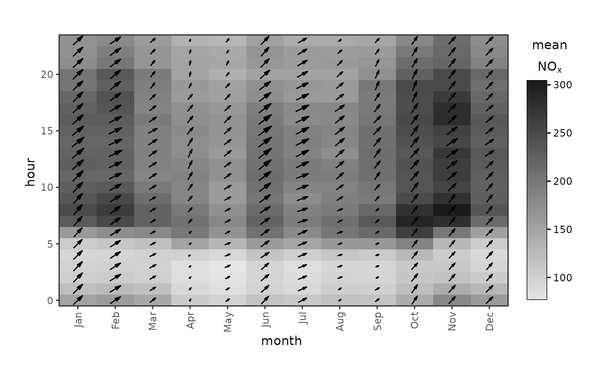
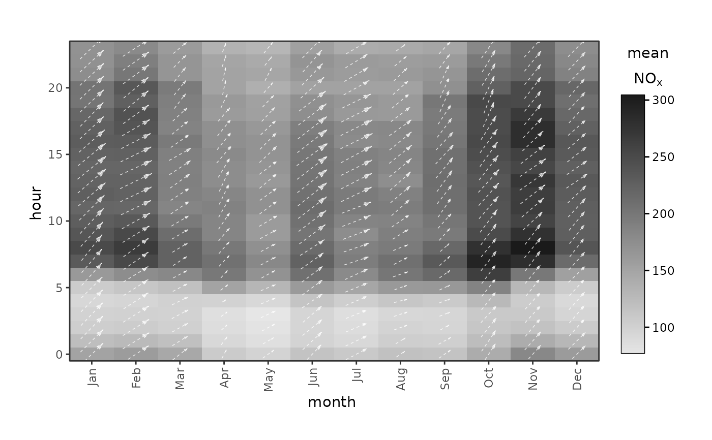

This function provides a convenient way to set default options for windflow
layers in openair plots, which typically show the mean wind speed and
direction as compass arrows. It returns a list of options that can be passed
to layer_windflow().
Arguments
- limits
Numeric vector of length 2 specifying the limits for wind speed. By default, it is set to
c(NA, NA), which means the limits will be determined automatically based on the data.- range
Numeric vector of length 2 specifying the range of possible sizes of the windflow arrows. The default is broadly appropriate throughout
openair, but if plots are beings saved at different resolutions it may be appropriate to to tweak this.- arrow.angle, arrow.length, arrow.ends, arrow.type
Passed to the respective arguments of
grid::arrow(); used to control various arrow styling options.- lineend
The style of line endings. Options include
"butt","round", and"square". Default is"butt".- alpha
Numeric value between 0 and 1 specifying the transparency of the lines. Default is 1 (fully opaque).
- colour, color
Colour of the lines. Default is
"black".colourandcolorare interchangeable, butcolouris used preferentially if both are given.- linetype
Line type. Can be an integer (e.g., 1 for solid, 2 for dashed) or a string (e.g., "solid", "dashed"). Default is 1 (solid).
- linewidth
Numeric value specifying the width of the lines. Default is 0.5.
- windflow
Logical value indicating whether to include the
windflowlayer. Default isTRUE. Used internally byopenairfunctions.- arrow
A
grid::arrow()object specifying the appearance of the arrows.
Value
A list of options that can be passed to the windflow argument of
functions like trendLevel().
Examples
# `windflow` can be `TRUE` to use defaults
trendLevel(mydata, type = "default", cols = "greyscale", windflow = TRUE)

# use the `windflowOpts()` function to customise arrows
trendLevel(
mydata,
type = "default",
cols = "greyscale",
windflow = windflowOpts(
colour = "white",
alpha = 0.8,
linewidth = 0.25,
linetype = 2
)
)
